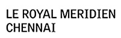

| Hospitality Partner |
| Le Royal Meridien, Chennai |
| Once a tiny fishing village, Chennai (formerly Madras) is now a lively metropolis and the capital of the state of Tamil Nadu. Situated on 3.5 acres of exquisitely landscaped gardens, the architectural wonder of Le Royal Meridien Chennai inspires guests to explore the city's allegiance to ancient traditions, no matter how modernized it has become and is located between the international airport and the business district, Le Royal Meridien Chennai features meeting and banquet space for up 1,500 guests, five restaurants and bars, a state-of-the-art fitness centre, and a splendid outdoor swimming pool. Accommodation: Le Royal Meridien Chennai offers a choice of guest rooms. You can choose to stay in Superior or Deluxe rooms, which are fully equipped with modern facilities that include electronic safe, tea and coffee maker, satellite TV, room control panel, telephone, Internet, spy hole and security chain, smoke detectors, sprinklers and soundproofing. Those looking forward to a royal treat both in terms of facility and hospitality can stay at Royal Club. The Royal Club offers a king bed, lounge, butler service, airport transfers, two IDD phone lines, interactive television, high speed Internet access as well as access to the Royal Club Lounge which includes buffet breakfast, Cocktails accompanied with canopies, butler services and other facility services. The Le Royal Meridien also offers Executive Suite, Deluxe Suite and Presidential Suite. |